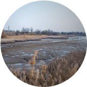
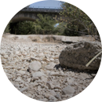
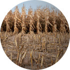
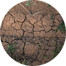
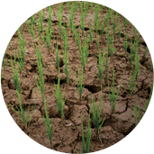

가뭄교육의 필요성





가뭄교육 안내
가뭄 심화교육
가뭄 이해 및 물 절약 필요성
연령별 맞춤형 교재와 시청각 자료를 기반으로 가뭄에 대한 교육을 제공합니다.
성인·청소년 대상 맟춤형 가뭄 교육자료 개발 생활밀착 가뭄상식 가뭄교육자료 이미지
-
제1장 가뭄, 바로알기교재보기
- 01지구가 푸른색으로 보이는 이유는 무엇일까요?
- 02물이 부족한 우리의 생활은 어떨까요?
- 03물은 어디에서 올까요?
- 04우리나라는 충분한 비가 내리고 있을까요?
- 05물이 부족해지는 현상을 무엇이라고 할까요?
- 06물 부족(가뭄)은 어떻게 진행될까요?
- 07물 부족(가뭄)의 특징은 무엇일까요?
- 08물 부족(가뭄)이 심화 되면 어떻게 될까요?
-
제2장 가뭄, 대비하기교재보기
- 09우리나라도 가뭄이 발생할까요?
- 10우리나라는 어떤 가뭄이 있었나요?
- 11해외에는 어떤 가뭄이 있었나요?
- 12가뭄은 어떻게 대비할 수 있을까요? (예방·대비)
- 13가뭄이 발생하면 어떻게 해야할까요? (대응)
-
제3장 가뭄정보, 확인하기교재보기
- 14우리 동네는 현재 가뭄일까요?
- 15가뭄 교육을 받아보고 싶다면?
-
제1장 - 가뭄, 바로알기
(학습목표)물이 부족한 현상에 대해 이해할 수 있고, 가뭄발생의 원인과 결과에 대해 설명할 수 있습니다.
-
제2장 - 가뭄, 대비하기
(학습목표)가뭄이란 우리 주변에 빈번히 존재하는 물 부족 현상임을 이해할 수 있고, 가뭄을 대비하기 위한 방법에 대해 설명할 수 있습니다.
-
제3장 - 가뭄정보, 확인하기
(학습목표) 국가의 가뭄 관리 노력을 이해할 수 있고, 국가가뭄정보포털(drought.go.kr)에 접속하여 가뭄 정보를 확인할 수 있습니다.
가뭄 기본교육
가뭄교육체험장
가뭄 이해, 대응, 물 절약 등 6개 Section으로 구성된 핵심적인 내용들로 가뭄에 대한 교육을 제공합니다.
-
Ⅰ- Intro
교육 및 체험에 앞서 가뭄 피해 사진과 영상을 통해 가뭄의 심각성을 느낄 수 있습니다.
-
Ⅱ - 가뭄 이해
가뭄의 정의와 특징, 발생 사례와 향후 전망을 그래픽패널, 터치스크린 및 맵핑 영상을 통해 쉽게 이해할 수 있습니다.
-
Ⅲ - 가뭄 대응
과거와 현재의 가뭄대응 방법을 비교해가며 알아 보고, 예방적 가뭄대응의 필요성을 느낄 수 있습니다.
-
Ⅳ - 가뭄 예·경보
가뭄 예·경보의 필요성과 시행방안, 분석기법을 보고, PC를 통해 가뭄정보포털을 직접 체험할 수 있습니다.
-
Ⅴ - 물 절약
외국과 비교하여 우리나라의 물 사용량이 많음을 느끼고, 생활 속에서 물을 절약하는 방법을 알아봅니다.
-
Ⅵ - 가뭄체험
가뭄지역의 이야기를 통해 가뭄 상황을 이해하고, 가뭄이 발생할 때 사용하는 도구를 통해 가뭄을 직·간접적으로 체험합니다.
| 가뭄 교육 종류 | ||
|---|---|---|
| 교육명 | 가뭄 심화교육 | 가뭄 기본교육 |
| 교육일자 | 매월 2, 4주 목요일 * 다른 일자 교육 또는 방문교육 신청 : 042-629-3183~4 |
월/수/금요일 |
| 소요시간 | 2~3시간(가뭄 기본교육 포함) | 20~30분 |
| 교육설명 | 교재·PPT·시청각 자료 등 체계적 교육과정을 통해 가뭄 全 주기에 대해 폭넓게 이해할 수 있습니다. |
시청각 자료를 통해 짧은 시간 동안 가뭄 全 주기에 대해 쉽게 이해 할 수 있습니다. |
찾아오시는 길
가는길1
가는길1
가는길1
가는길1
가는길1
가는길1
가는길1
가는길1
가는길1
가는길2
가는길2
가는길2
가는길2
가는길2
가는길2
4F
1. 강의실1 가는 길 : 엘레베이터에서 나와 좌측으로 한번 꺾고 직진 또는 엘레베이터에서 나와 우측으로 한번 꺾고 직진
2. 강의실2 가는 길 : 엘레베이터에서 나와 좌측으로 한번 꺾고 좌측 방향 강의실
강의실1 사진
강의실2 사진
2. 강의실2 가는 길 : 엘레베이터에서 나와 좌측으로 한번 꺾고 좌측 방향 강의실
강의실1 사진
강의실2 사진